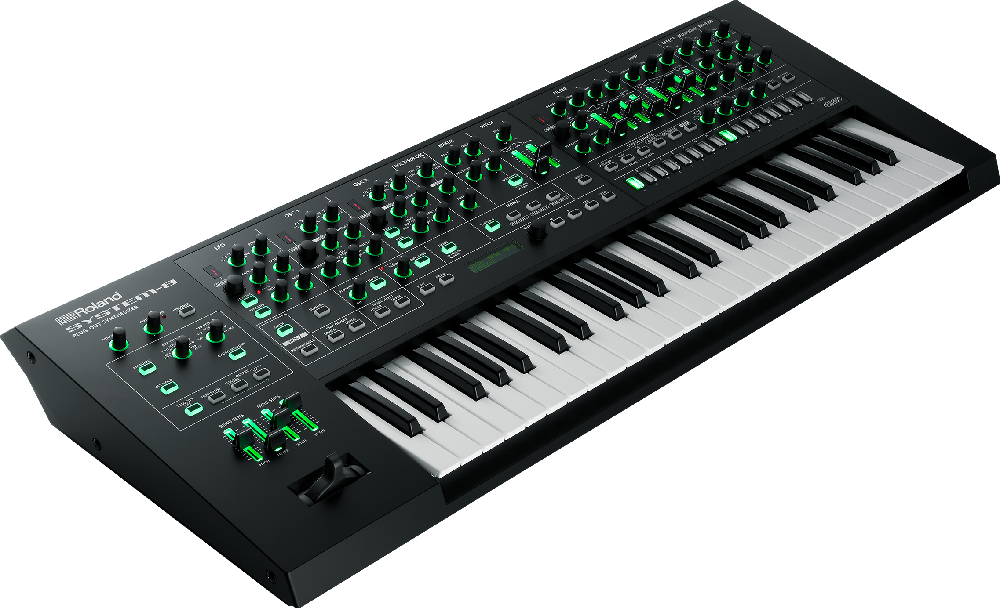

Instrument under 1980-talet
Trummaskin:
En trummaskin är ett elektroniskt musikinstrument som spelar upp ljudet från trummor, men också andra slagverk. Konstruktionen består av en ljudandel och en rytm del. De tidigaste trummmaskinerna kallas rytmmaskiner. Under 1970 talet använder trummaskinen inom popmusiken i enstaka låtar och i album. Trummaskinen slog dock inte igenom på riktigt inom popmusiken förrän 1980 talet. Från 1990 talet och framåt har trummaskinen kommit till stor användning genom musikgenre som techno, dance och eurodance där elektroniska musikinstrument dominerar.
Synth:
Synth är ett elektroniskt musikinstrument som via analog eller digital ljudsyntes kan skapa näst intill oändligt många olika ljud. Oftast används synthen för att härma akustiska instrument eller andra redan existerande ljud. Men synthen ger en öppning till att skapa helt nya och egna ljud. Synthen är oftast det dominerande musikinstrumentet vid skapandet av olika typer av elektronisk musik. En synth är uppbyggd genom två delar, en ljudalstrande del, och en styrande del.
